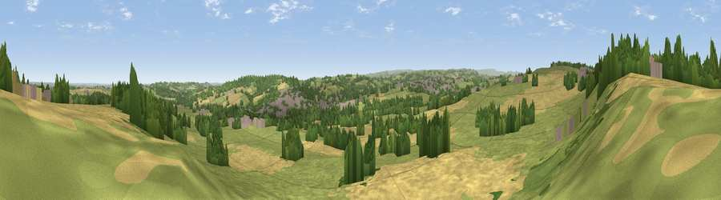

Viewpoint near Emley
#17020 in England · top 24% of its area beats it · near EmleyThe view, rendered

A 360° render of this exact spot computed from the terrain model, tree cover and land cover — summer colours, afternoon light, calibrated against photographs of famous viewpoints. Real trees, hedges and buildings will differ in detail.
The panorama
Grey silhouette: terrain skyline in each direction (720 bearings, Earth curvature and refraction included). Dashed green: skyline with trees (+15 m) and buildings (+8 m) as obstacles. Blue strip: how far the ground is visible on each bearing.
Where the view opens
Wedge length = distance to the farthest visible ground on that bearing (vegetation-aware). Rings at 10, 25 and 50 km.
What fills the view
47% grassland · 34% cropland · 15% woodland · 4% built-up
Angular shares of the visible panorama (visual magnitude), not map area. Landscape diversity 0.50 (0–1 Shannon).
Key numbers
More beautiful places nearby
The staircase of upgrades: each row has a higher view potential than everything closer. Driving times are estimates from straight-line distance, calibrated against real road routing — check an actual route before setting out.
| Place | Direction | Drive | Score |
|---|---|---|---|
| Viewpoint near Emley Moor | W · 3 km | ~6 min | 67.4 |
| Viewpoint near High Hoyland | SE · 3 km | ~8 min | 67.8 |
| Pool Hill | S · 4 km | ~9 min | 68.0 |
| Viewpoint near Grange Moor | NNW · 4 km | ~9 min | 69.8 |
| Viewpoint near Hoylandswaine | S · 8 km | ~16 min | 71.8 |
| Viewpoint near Hoylandswaine | S · 8 km | ~16 min | 72.7 |
| Viewpoint near Jackson Bridge | SW · 9 km | ~17 min | 73.5 |
| Viewpoint near Wharncliffe Side | SSE · 17 km | ~30 min | 75.0 |
53.60871, -1.62930 · source: screening · position refined by local search. Computed location — check access rights before visiting.